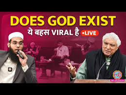
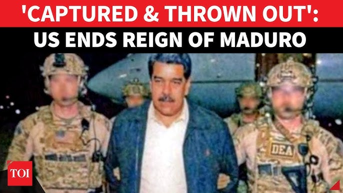
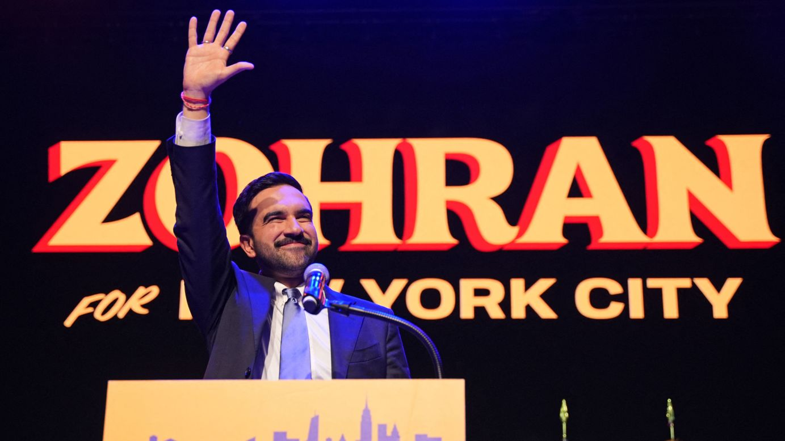
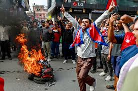
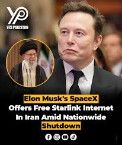
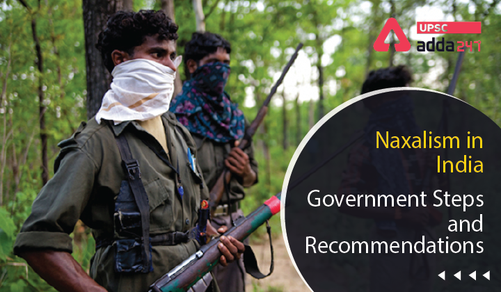
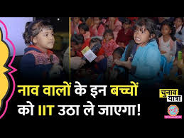
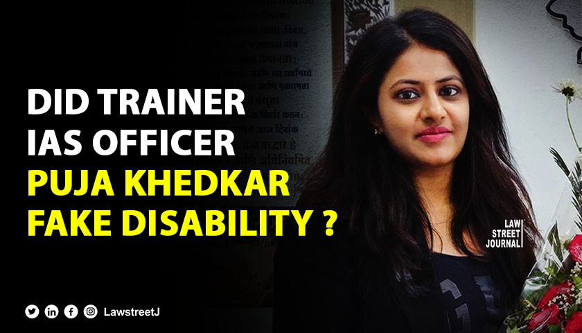
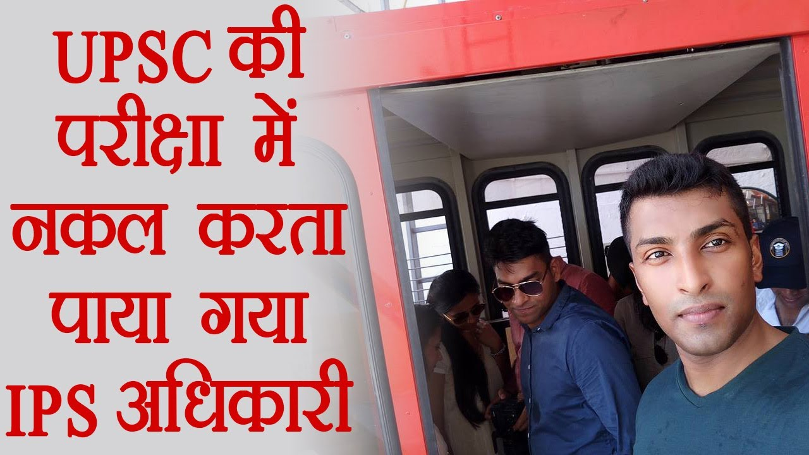
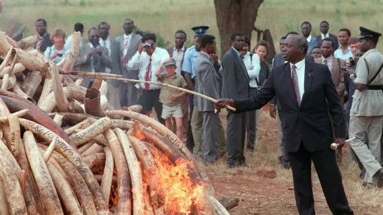

- Analysis
- Text
- Analysis
- Text
- Analysis
- Text
- Analysis
- Text

- A formal, academic-style debate moderated by Saurabh Dwivedi featuring renowned lyricist/rationalist Javed Akhtar and Islamic scholar Mufti Shamail Nadwi. - The discussion transcends religious specifics to focus on the Ontological (nature of being) and Epistemological (nature of knowledge) existence of a "Necessary Being" or "God." - It serves as a civil template for how two diametrically opposite worldviews—Atheism/Rationalism and Theism/Faith—can coexist in a public intellectual space. - Analysis - Mirror to Modern Secularism & Democracy - Javed Akhtar’s stance is a live application of the Fundamental Duty to develop "Scientific Temper" (Article 51A). He argues that questioning is the engine of civilization. - Social liberty and repression - Javed challenges the "result" of religion, noting that highly religious regions often face high repression, while secular societies often enjoy more civil liberties. - The debate forces a distinction between Blind Faith and Evidence-based Belief. Javed argues that demanding "Faith" is often an admission that one lacks "Justification". - Digital/Media as a Tool for Accountability - It shows how independent journalism can find "islands of excellence" that the official state machinery might ignore. - It invites the public to think critically about the Metaphysical foundations of their own laws and ethics. - International Relations - Operation Absolute Resolve - The Capture of Nicolás Maduro - Data Source [Date of Publication] - U.S. Department of War [January 3–12, 2026] - Location - Caracas, Venezuela (Specifically a fortified compound/fortress); Southern District of New York (SDNY). - Description -
- On January 3, 2026, the United States launched a massive military operation involving over 150 aircraft and elite special forces (Delta Force) to extract Nicolás Maduro and his wife, Cilia Flores, from Caracas. - The operation followed a 2025 escalation where the U.S. doubled the bounty on Maduro to $50 million and designated the Cartel de los Soles (Cartel of the Suns) as a terrorist organization. - Maduro was transported to New York to face federal charges of narco-terrorism, cocaine importation conspiracy, and weapons possession. - In his absence, Vice President Delcy Rodríguez was sworn in as acting president, though her government remains under heavy U.S. pressure. - Analysis - The "Noriega Precedent" and Modern Extraterritoriality - This mirrors the 1989 capture of Manuel Noriega in Panama. However, unlike 1989, the 2026 operation occurred in a much more complex geopolitical landscape involving Russian and Chinese interests. - This challenges the principle of Sovereign Immunity. Under international law, a sitting Head of State typically enjoys immunity from the jurisdiction of foreign courts. The U.S. bypasses this by arguing Maduro’s 2024 election was fraudulent, thus he is an "illegal usurper" rather than a sovereign. - Geopolitics of Energy - The "Oil for Stability" Trade-off - The U.S. has signaled that sanctions relief is contingent on Venezuela severing ties with Iran, Russia, and China, and granting U.S. firms exclusive rights to modernize the oil sector. - This highlights Realpolitik—the use of military force to secure economic energy corridors. It marks a shift from "regime change for democracy" to "regime change for resource alignment." - Internal Security - Power Vacuum and Paramilitary Risks - The removal of the "head" of the Cartel de los Soles risks a "Hydra effect." Without a central authority, decentralized criminal gangs (like Tren de Aragua) may compete for control, leading to a surge in regional instability. - Internal Security Insight: - For India, this serves as a case study on non-state actors embedded within state machinery and the difficulty of dismantling such networks without causing a total state collapse. - Ethics of Unilateral Intervention - The "Rules-Based Order" vs. Unilateralism: - Critics argue that bypassing the International Criminal Court (ICC) in favor of a domestic U.S. trial undermines global judicial institutions. - Humanitarian Dilemma: - While the U.S. claims the move is for "liberty," the immediate result has been increased military presence and economic blockades, raising questions about the ethical cost of "justice" for the average Venezuelan citizen. - Showcase of USA military might - Operation Absolute Resolve demonstrates the use of "surgical" military force as a tool of judicial enforcement. The ability to extract a world leader from a "heavily fortified fortress" with zero U.S. casualties signals a massive technological and intelligence disparity that will force other "adversary" nations to rethink their domestic security. - Indirect "Mass Killing" - The Fentanyl Crisis (Present) - Current U.S. rhetoric (especially in 2025/2026) classifies the 100,000+ annual overdose deaths as "killings" by cartels. - This serves as the primary "National Security" justification for the capture of Nicolás Maduro and potential military strikes in Mexico. It shifts the definition of "Cartel Violence" from physical murder to Chemical Warfare. - The Rise of Zohran Mamdani - Data Source [Date of Publication] - The Guardian [November 4, 2025] - Location - New York City, USA (Gracie Mansion/City Hall) - Description -
- Zohran Kwame Mamdani assumed office on January 1, 2026, as the first Muslim, first South Asian, and first African-born mayor in NYC history. Born in Kampala, Uganda (1991) to Indian-origin parents. His mother is world-renowned filmmaker Mira Nair, and his father is the post-colonial academic Mahmood Mamdani. - He moved to NYC at age seven, became a U.S. citizen in 2018, and served in the New York State Assembly before defeating former Governor Andrew Cuomo in a historic upset. - He is a a self-described Democratic Socialist (DSA-backed), he campaigned on a "People’s Platform" including rent freezes, a $30 minimum wage, and free public transit. - Analysis - Openness of American political system - His rise from a "Naturalized Citizen" (2018) to Mayor (2026) in just eight years is a testament to the fluidity and openness of the American political system, contrasting with more rigid global structures. - Why Americans chose an outsider? - Focus on cost of living - In a city where housing is a primary struggle, his promise to freeze rents for 2 million tenants acted as a "Socialist Safety Net" that resonated with the working class. - His "Fast and Free" bus plan and "City-run Grocery Stores" were seen as direct solutions to the daily struggles of New Yorkers. For UPSC, this is a study in Populist Policy-making that prioritizes immediate relief over long-term fiscal conservatism. - Social media mastery and mobilization at scale - He used short-form video to bypass traditional media "gatekeepers." This allowed him to speak directly to voters, making his "outsider" status an asset rather than a liability. - His campaign utilized over 30,000 "doorknockers." This high-intensity, ground-level engagement is similar to the grassroots organizing seen in successful Indian regional parties. - Political Dynasty Fatigue: - He mobilized a Youth Bulge—voters under 40 turned out in record numbers, much like the demographic shifts seen in Indian elections. In a time of "Gerontocracy" (rule by the elderly) in U.S. politics, Mamdani (34) became the youngest mayor in over a century. - Voters were tired of the "Old Guard." Cuomo represented decades of established political machinery. Mamdani positioned himself as the antidote to political entrenchment. - The "Third Wave" of the Indian Diaspora - Historically, the Indian diaspora was known for professional success (Doctors/Engineers). Mamdani represents a shift toward Political Assertiveness. - Unlike diaspora leaders who align closely with New Delhi, Mamdani’s progressive stance often critiques Indian domestic policy. This proves the diaspora is not a monolithic "Soft Power" tool but an independent political force. - The 2025 "Gen Z" Revolution - Nepal - Data Source [Date of Publication] - Britannica [September 8, 2025] - Location - Kathmandu (Singha Durbar, New Baneshwor) and major urban centers across Nepal. - Description -
- In September 2025, Nepal witnessed its most widespread unrest in decades. Sparked by a government ban on 26 social media platforms (including Facebook, WhatsApp, and YouTube) on Sept 4, a leaderless "Gen Z" movement toppled the coalition government of KP Sharma Oli. - The movement was fueled by the #NepoBaby trend, which contrasted the lavish lifestyles of political elites' children with the 20% youth unemployment rate. - The climax occurred on September 9, 2025, after 19 protesters were killed in police firing. Protesters stormed the Federal Parliament and set fire to the private residences of several former Prime Ministers (including KP Oli's home in Balkot). - Following the resignation of the PM, Sushila Karki (former Chief Justice) was sworn in as the Interim Prime Minister on September 12, 2025, to lead the country toward elections in March 2026. - Analysis - Digital Repression and the "Social Contract" - The social media ban was the "final spark." In a country where remittances (33% of GDP) are the backbone, digital platforms are not just for leisure; they are critical economic tools for migrant workers and youth in the gig economy. - This represents a breakdown of the digital social contract. The state's attempt at "Chinese-style" control failed because Nepal lacks the domestic digital infrastructure to replace global platforms. - Political laxity and economic turmoil - The Rasuwa GLOF (Glacial Lake Outburst Flood) in July 2025 destroyed 8% of Nepal's power capacity. The subsequent political instability delayed repairs, affecting India’s Cross-Border Electricity Trade (CBET) and Nepal’s ability to earn green-energy revenue. - Nepal has seen a massive investment in education (funded by remittances), but the domestic economy remains a "Service-Remittance" trap. The youth who protested weren't just the uneducated poor; they were over-educated and under-employed, a demographic that is historically the most revolutionary. - The Rise of "Leaderless" Political Agency - Unlike the 2006 People’s Movement led by political parties, the 2025 uprising was coordinated via Discord and Telegram. Protesters carried no party flags, signaling a total rejection of the "Old Guard" gerontocracy. - This mirrors the "Araggalaya" in Sri Lanka (2022) and the Bangladesh student protests (2024), highlighting a regional trend of Youth-led Technocratic demands. - Constitutional Innovation - The "Judicial Executive" - The appointment of Sushila Karki as Interim PM marks a rare return to a non-partisan, judicial-led caretaker government (similar to the 2013 Khil Raj Regmi cabinet). - This highlights a recurring constitutional "safety valve" in Nepal where political deadlocks are resolved by turning to the Judiciary, though it raises long-term concerns about the Separation of Powers. - Internal Security and the "Hydra" of Unrest - During the chaos, over 12,500 prisoners escaped from various jails across Nepal. This creates a massive internal security vacuum that the interim government must address before the 2026 elections. - Geopolitical Implications (India-Nepal-China) - The fall of the Oli government—often seen as leaning toward Beijing—is a strategic pivot. While China faces a setback in its BRI (Belt and Road) implementation, India’s "Quiet Diplomacy" and support for the interim administration have strengthened its image as a "First Responder" for regional stability. - Economy - - Science and tech - - Environment - - Disaster Management - - Internal security - SpaceX Starlink Intervention in Iran - Data Source [Date of Publication] - Al Jazeera [January 14, 2026] - Location - Tehran and border regions of Iran; SpaceX HQ, California, USA. - Description -
- In response to a near-total internet blackout imposed by the Iranian government (starting Jan 8, 2026) to quell nationwide protests, SpaceX activated free Starlink service for terminals inside Iran. - Despite a formal ban and a 2025 law carrying penalties up to the death penalty for "unlicensed satellite use for espionage," an estimated 50,000–100,000 smuggled terminals are currently operational. - SpaceX pushed a critical software update on Jan 13 to help terminals resist military-grade jamming (GPS/L-band interference) allegedly deployed by Iranian security forces. - Analysis - The Sovereign-Commercial Nexus & Challenges to Westphalian Sovereignty - This event represents a shift where a private corporation (SpaceX) effectively overrides the domestic laws of a nation-state. - In the digital age, "Sovereignty" is no longer just about borders; it is about Data Sovereignty. By providing a "Space-based bypass," SpaceX challenges the state's monopoly over its internal information environment. - Internal Security: - Asymmetric Digital Warfare - Weaponization of Connectivity: - For the state, the blackout is a tool for "Public Order." For the protesters, Starlink is "Critical Infrastructure" for mobilization. - Intelligence Vulnerability: - While Starlink provides access, it also creates a "Telltale Signal." Reports indicate Iranian authorities are using drones to spot Starlink dishes on rooftops, turning a tool of freedom into a target for kinetic raids. - International Relations - Soft Power vs. Interference - The US administration’s support for this move (under "Internet Freedom" licenses) blurs the line between humanitarian aid and regime change operations. - Iran’s complaint to the ITU (International Telecommunication Union) highlights the friction between international radio regulations and the "Right to Information" as a universal human right. - Ethics & The "Digital Iron Curtain" - Article 19 (UDHR): - The intervention serves the ethical imperative of the global right to "seek, receive, and impart information through any media and regardless of frontiers." - Corporate Ethics: - Does a private CEO (Elon Musk) have the ethical mandate to decide which nation’s "Government Shutdown" is illegitimate enough to warrant intervention? This highlights the "Technocracy vs. Democracy" debate. - Science & Tech - Electronic Counter-Countermeasures (ECCM) - The technical battle (Jamming vs. Software hardening) shows that Low Earth Orbit (LEO) constellations are the new frontline of Electronic Warfare. - Unlike traditional geostationary satellites, the sheer number of LEO satellites makes "Total Jamming" nearly impossible, shifting the advantage back to decentralized users. - PLFI (Naxal) Impersonation Gang - Data Source [Date of Publication] - The Indian Express [May 28 – June 15, 2023] - Location - Exam Centers in Ranchi and Hazaribagh, Jharkhand; Delhi (Coordination hubs). - Description -
- During the UPSC Prelims conducted on May 28, 2023, a high-tech impersonation racket linked to the People's Liberation Front of India (PLFI)—a splinter Naxal group—was intercepted. - The gang utilized "Lookalike" candidates (professional examinees) to write papers for clients who had paid between ₹15 lakh to ₹25 lakh. - The racket involved high-fidelity forgery of admit cards, where photos were digitally morphed to blend features of both the original candidate and the impersonator, making detection at the center gates extremely difficult for manual invigilators. - Analysis - Financing Insurgency through Academic Fraud - The PLFI is traditionally known for extortion in the mining and railway sectors. Moving into UPSC impersonation marks a diversification of their funding streams. - This represents a "Hybrid Threat" where an insurgent group compromises state institutions not through violence, but through systemic corruption. - Abuse of technology and response - The gang used sophisticated AI-based software to create Hybrid Face Morphs. If an invigilator looked at the photo, it shared enough characteristics with both the real candidate (for records) and the "solver" (for the exam day) to pass basic scrutiny. - This led the UPSC to reconsider Biometric and Iris scanning at centers to move beyond the limitations of photo-based ID verification. - Monetary benefits > National integrity - Most impersonators were not Naxals themselves but bright students from prestigious universities (often referred to as "Munnabhais") who were recruited by the gang as "mercenary scholars." - This highlights a dark side of the coaching industry where high-stakes pressure and financial desperation drive students into organized crime. - Role of ground intelligence - The bust occurred because of Human Intelligence (HumInt). Jharkhand police had been tracking PLFI communications, which led them to specific roll numbers. - This proves that while technology is necessary, "Ground Intelligence" remains the most effective tool against organized cheating rackets. - Ethics - Miracle children & Visionary teacher - Data source [Date of publication] - The Lallantop [November 11, 2023] - Location - Gauri Ghat in Jabalpur, India - Description -
- Parag Dewan (referred to as Parag Bhaiya by the students) has been running this school since 2016. He started it after his mother's passing, initially even offering small sums of money to encourage local children to study instead of falling into bad habits. He often wears military-style clothing to motivate students toward careers in the armed forces (Agniveer). - The students are primarily children of boatmen, priests, and laborers working at the ghats. Despite their humble backgrounds, children as young as 5 and 6 years old display an astonishing grasp of advanced subjects typically taught in 11th, 12th, or even college-level courses. - The children are also taught Sanskrit shlokas and English to help them compete in modern competitive exams. - Analysis - The Boundless Potential of a Child - A child's brain is naturally sharper to grasp and understand new information. - Human brain can master concepts far beyond what is traditionally expected for their age. - Ethical characteristics of the teacher - Selflessness & Compassion - Parag started this initiative in 2016 following his mother's death. - He began by giving small amounts of money to children just to encourage them to sit and study rather than falling into substance abuse. - Empathy for the underprivileged - He specifically give attention to children who are often ignored by mainstream systems. - Visionary leadership - Parag’s ultimate goal is not just to teach, but to produce IAS and IPS officers from these backgrounds. - He believes in "integration"—bringing many disparate elements together to create one strong future for these kids. - Opportunity Gap and equalizing the starting line - It supports the neurological theory that the Prefrontal Cortex is highly plastic in early childhood, and delaying "complex" subjects might actually be a missed opportunity for these children. - Without Parag Bhaiya, these children would likely have remained boatmen or laborers. - This supports the argument that reservations are not about "lowering standards," but about providing a ladder to those whose "prime years" were spent struggling for survival rather than studying. - A Mirror to "Superiority Complexes" - There is a common, often unspoken, bias that children from "backward" backgrounds or "low-income" families lack the intellectual depth for complex subjects. - The video is a direct challenge to the "Social Darwinist" view that some groups are naturally more intelligent or capable than others. - The video proves that "inferiority" is an artificial construct created by lack of access. - Challenge to the rigid structure of modern schooling - The video challenges the rigid structure of modern schooling where we assume a child must be 17 to understand Calculus. - Teacher as a "Social Entrepreneur" - By operating at the Ghat, he brings the school to the people rather than waiting for the people to come to a formal building. This "Decentralized Education" model is highly effective for marginalized groups. - Digital/Media as a Tool for Accountability - It shows how independent journalism can find "islands of excellence" that the official state machinery might ignore. - Public awareness - It forces the public and politicians to ask: "If one man at a Ghat can do this with zero budget, why can't the state-funded schools achieve the same?" - Anthropology -
- Puja Khedkar (AIR 821, CSE 2022) had her provisional selection cancelled by the UPSC on July 31, 2024, after a probe revealed "unprecedented" fraud. - The investigation found she had faked her identity—altering her name, her parents' names, and even her signature and email—to bypass the limit of 9 attempts allowed for her category (OBC + PwBD). - She was accused of wrongly availing OBC-Non Creamy Layer benefits despite her father being a wealthy retired bureaucrat, and PwBD (Persons with Benchmark Disabilities) benefits for "mental illness and blindness" while repeatedly avoiding mandatory medical re-examinations at AIIMS. - In September 2024, the Central Government (DoPT) officially sacked her from the IAS with immediate effect under Rule 12 of the IAS (Probation) Rules, 1954. - Analysis - The "Identity Forgery" Breach - Khedkar’s ability to create multiple digital identities to appear for the exam 12 times (exceeding the 9-attempt cap) exposed a major vulnerability in the UPSC’s application filtering system. - This case forced the Commission to move toward Aadhaar-based authentication and more stringent document verification protocols to ensure "One Candidate, One Identity." - Abuse of the Disability Quota (PwBD) and exploitation of vulnerable - Khedkar claimed 47% disability but missed six scheduled medical appointments between 2022 and 2023. Her refusal to undergo a standard verification check at a government hospital highlighted how the quota could be "gamed" by influential individuals. - This is a classic case of "Distributive Injustice," where a resource intended for the most vulnerable is usurped by the most privileged through deceit. - VIP status and moral decay - The case only came to light due to her non-bureaucratic conduct during probation—demanding a private cabin, using a red-blue beacon on a private Audi, and her father allegedly threatening local staff. - It proves that "Intellectual Ability" (clearing the exam) is not a substitute for "Moral Aptitude." Her desire for VIP status as a trainee officer was the catalyst for the scrutiny that eventually ended her career. - The "High-Tech" Cheating Case (Safeer Karim) - Data Source [Date of Publication] - The Hindu [February 2018] - Location - Presidency Girls Higher Secondary School, Egmore, Chennai (Exam Center); Hyderabad (Accomplice location). - Description -
- Safeer Karim (AIR 112, CSE 2014), a serving Assistant Superintendent of Police (ASP) on probation in Tamil Nadu, was caught cheating during the UPSC Mains 2017 exam while attempting to switch to the IAS. - He used a sophisticated setup: a miniature camera (disguised as a shirt button) to take photos of the question paper, an iPhone hidden in his socks to transmit images to his wife in Hyderabad via Google Drive, and micro-earpieces to receive dictated answers. - His wife, Joicy Joy, and a coaching center director, P. Rambabu, were arrested in Hyderabad for aiding the malpractice from a remote location. - Analysis - Character of a "Munna Bhai" Bureaucrat - Hubris of Power: - Karim reportedly bypassed the initial security frisking by using his status as a "Probationary IPS Officer" to intimidate the guards. This misuse of the "uniform" even before the exam started is a grave ethical failure. - Lack of Contentment: - Despite already holding a rank (IPS), his desperate obsession with becoming an IAS officer led him to criminal conspiracy. This is a case study on "Greed vs. Ambition." - Social Justice - - International Relations - - Economy - - Science and tech - China from mere manufacturing hub to AI and robotics - Data source [Date of publication] - ChatGPT [January 18, 2026] - Location - China - Description - - - As of early 2026, China has transitioned from a fast follower to a dominant global leader in several key segments of AI and robotics. While the United States remains the leader in high-end AI research and advanced semiconductors (like NVIDIA’s latest chips), China has achieved a "supply chain sovereignty" that allows it to commercialize and deploy these technologies at a scale and speed no other nation can currently match. - Chinese companies like AgiBot (Zhiyuan Robotics) and Unitree now control approximately 80% of the global market for humanoid robot shipments. This is the most technology driven field. - Analysis - China's advantage - Supply chain sovereignty (Unrivaled industrial ecosystem) - In cities like Shanghai and Shenzhen, 80-100% of the components needed to build a complex robot—sensors, actuators, "dexterous hands," and compute platforms—can be sourced within a 150-kilometer radius. - Data abundance - With over 1.1 billion mobile users and the world's largest manufacturing base, China has a massive "data lake" to train AI for industrial automation and consumer scenarios. - Infrastructure - China has the world's most extensive 5G/6G and ultra-high-voltage power networks, providing the low-latency connectivity and energy required to run massive AI data centers and robot fleets. - Education - As of 2025-26, the Chinese Ministry of Education has embedded AI into the national curriculum. Students in 4th and 8th grades are now required to take at least one compulsory AI class per week. They don't just learn to code; they use AI to simulate physics experiments (like nuclear fission) or biology models (gene frequencies). - Chinese students have access to low-cost robotics kits and components. Schools in cities like Shenzhen and Hangzhou often have AI-powered labs where students build real-world autonomous drones or humanoid parts. - Turning disadvantages into an advantage - Faced with U.S. export controls on advanced chips (like the H100), China has pivoted its AI strategy toward Efficiency-Driven AI and Embodied AI. - Low-Cost Large Language Models (LLMs): - Startups like DeepSeek have disrupted the market by developing influential AI models at a fraction of the cost of OpenAI or Google. - This "frugal innovation" allows Chinese AI to be integrated into everyday hardware quickly. - Government support - 15th Five-Year Plan (2026–2030): - This plan (launched this year) centralizes AI and robotics as the core of the economy. The goal is to move from "follower" to "global innovation center" by 2030. - Direct Subsidies & Vouchers: - Cities like Shenzhen have launched massive funds (e.g., a 10 billion yuan / $1.4B fund) specifically for "embodied intelligence" (AI in robot bodies). They provide "computing vouchers" that cover up to 60% of a startup's cloud costs. - AI+" Initiative: - Similar to "Internet+," this policy forces the integration of AI into traditional sectors like manufacturing, healthcare, and agriculture, creating a guaranteed domestic market for startups. - Why India is lagging behind - R&D Investment - China spends ~2.4% of GDP on R&D; heavily business-led. - India spends ~0.64% of GDP; mostly government-funded. - Hardware Focus - China is the world's "factory"; unrivaled hardware prototyping speed. - India has been traditionally strong in Software Services (SaaS), not hardware. - Compute Power - China has massive sovereign GPU clusters (despite US sanctions). - India has high dependency on foreign chips (NVIDIA); domestic GPU clusters are still scaling up. - Funding Nature - China's "Patient capital" via state-backed funds focused on long-term tech. - In India VC funding favors "fast-return" apps like Fintech or E-commerce. - Brain Drain - China is successfully "reversing" brain drain with elite labs and high pay. - India's top AI research talent often migrates to the US or Europe for better infrastructure. - If India cannot compete in terms of money, then it can benefit an individual via other means like by making policies to enhance respect of an individual in society, offering special exclusive tourist destinations which are not available to any normal citizen, anything to make them feel that they are cared for. - Incompetence - According to the QS World Future Skills Index 2025, China scores exceptionally high in Academic Readiness (93.9/100) and Economic Transformation (88.5/100). - A 2025 report from a prominent VC (Deedy Das) noted that at the highest level of performance (+3 Standard Deviations), the best engineers in the world are increasingly Chinese due to the sheer scale of the talent pool and intensive PhD output (60,000 per year vs. India's 6,000). - National Employability Report's historical and updated data suggest that nearly 80% of Indian engineers are not employable for any knowledge-economy job. More alarmingly, only about 2.5% possess the advanced skills required for AI, machine learning, and data science. - In 2023–24, thousands of seats in core engineering (Mechanical, Civil, Electrical) remained vacant. - India's response - IndiaAI Mission: - A ₹10,300 crore investment is currently being used to build a 10,000+ GPU supercomputing infrastructure and a "Unified Data Platform" to provide Indian startups with the fuel (data and power) they need. - India Semiconductor Mission (ISM): - Recognizing that you can't lead in AI without chips, the government is subsidizing 50% of the cost of setting up semiconductor fabs (factories). As of 2026, several major units are under construction (e.g., Tata-PSMC fab). - Focus on "Green AI": - At the AI Impact Summit 2026 in New Delhi, India introduced the "Planet Sutra," a mandate to focus on energy-efficient AI models, carving out a niche as the leader in "Sustainable AI" for the Global South. - Environment - The Ivory Pyre - Conservation through Destruction - Data source [Date of publication] - Al Jazeera [April 30, 2016] - Location - Nairobi National Park, Kenya - Description -
- President Uhuru Kenyatta set fire to 11 giant pyres containing 105 tonnes of ivory and 1.3 tonnes of rhino horn. The stockpile represented nearly 8,000 elephants and 343 rhinos lost to poaching. - At the time, the black-market value of the stockpile was estimated at $150 million to $200 million. This was the largest ever destruction of ivory in history, intended to render the "white gold" worthless. - Analysis - Why Burn and Not Sell? - Signalling market value (Price vs. Value) - Selling the ivory, even legally, confirms that it has a monetary value. By burning it, Kenya sent a message that ivory is only valuable on a live elephant. - To break the demand loop: - Market Value -> Sustained Demand -> Price Spike -> Poaching - Preventing money laundering - Legalizing the sale of stockpiles often allows "dirty" (poached) ivory to be mixed with "clean" (legal) ivory, making it impossible for authorities to distinguish between the two. - Symbolic Leadership (Values in Administration): - It shows a leader willing to take a "non-utilitarian" step for a higher moral cause. - The act was a "Statement of Values" over "Statement of Accounts". Kenya chose to destroy wealth to protect a species, valuing Ecological Integrity over Gross Domestic Product (GDP). - By destroying such a massive sum, Kenya put ethical pressure on consumer nations (like China and Vietnam at the time) to shut down their domestic ivory markets. - One-time Gain vs. Sustainable income (Sustainable Development) - A single rhino horn can earn a poacher $50,000 once. However, a living elephant is estimated to be worth $1.6 million in tourism revenue over its lifetime. - It proves that protecting natural capital yields higher long-term dividends than liquidating it. - Critique of the strategy - Some economists argue that destroying supply makes ivory rarer, which could actually drive up the price for the remaining ivory, further incentivizing poachers. - $200 million could have been used to fund better-equipped forest rangers and drone surveillance. - Disaster Management - - Internal security - - Ethics - - Anthropology -